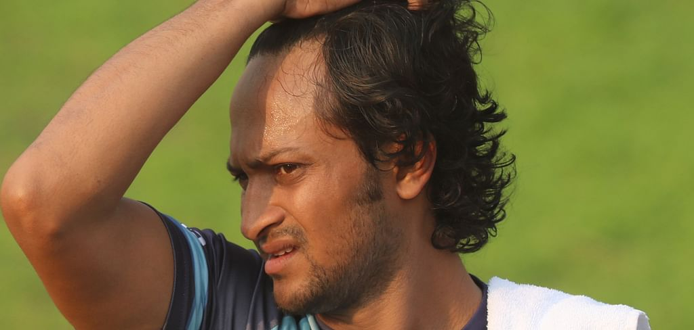
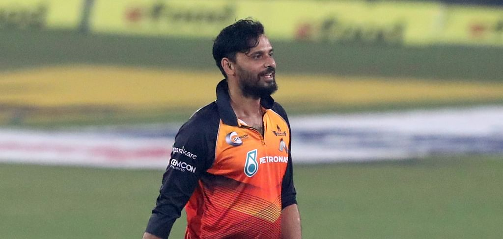
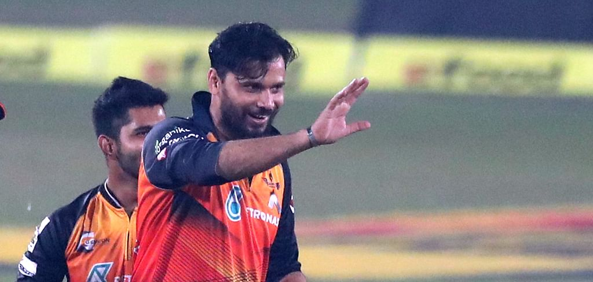

প্রকাশ: ১৫ ডিসেম্বর
শ্বশুর অসুস্থ, বঙ্গবন্ধু টি–টোয়েন্টির ফাইনাল খেলছেন না সাকিব
হঠাৎই যুক্তরাষ্ট্র যেতে হচ্ছে সাকিব আল হাসানকে। শ্বশুর অসুস্থ, তাই আজ রাতেই ঢাকা ছাড়বেন তিনি। এ কারণে বঙ্গবন্ধু টি-টোয়েন্টি কাপের ফাইনালে খেলা হচ্ছে না তাঁর। গতকাল বঙ্গবন্ধু টি-টোয়েন্টির প্রথম কোয়ালিফায়ারে গাজী গ্রুপ চট্টগ্রামের মুখোমুখি হয়েছিল সাকিবের জেমকন খুলনা। ম্যাচে মাশরাফি বিন মুর্তজার দুর্দান্ত বোলিং আর জহুরুল ইসলামের ব্যাটে ভর করে ফাইনালে পৌঁছে গেছে খুলনা। সাকিবও খুব একটা খারাপ করেননি। ব্যাট হাতে করেছেন ২৮। বোলিং করতে এসে ৩২ রানে নিয়েছেন ১ উইকেট। ম্যাচ শেষ কাল রাতেই হোটেল ছাড়েন তিনি। সাকিবের যুক্তরাষ্ট্র যাওয়ার বিষয়টি নিশ্চিত করেছেন জেমকন খুলনার ম্যানেজার নাফিস ইকবাল। তিনি বলেছেন, 'সাকিব গতকাল রাতে যুক্তরাষ্ট্র যাচ্ছেন। তাঁর শ্বশুর অনেকদিন ধরেই অসুস্থ। কাল রাতে জানা যায় সে তাঁর অবস্থা গুরুতর। যেহেতু পরিবার সবসময় প্রথমে। আর জেমকন খুলনা সবসময় এটাইকেই গুরুত্ব দেয়। ও কাল রাতে হোটেল ছেড়েছে। আজ ওর ফ্লাইট।' বঙ্গবন্ধু টি-টোয়েন্টিতে ৯ ম্যাচ খেলেছেন সাকিব। ১২.২২ গড় ও ১২০ স্ট্রাইক রেটে ১১০ রান এসেছে সাকিবের ব্যাট থেকে। কালকের ম্যাচেই টুর্নামেন্টে প্রথমবারের মতো দুই অংকের ঘরে যান সাকিব। বোলিংয়ে বরাবরের মতো মিতব্যয়ী ছিলেন সাকিব, সঙ্গে নিয়েছেন ৬ উইকেট। বঙ্গবন্ধু টি-টোয়েন্টির পর ক্রিকেটারদের কিছুদিন ছুটি পাওয়ার কথা। এরপর জানুয়ারি-ফেব্রুয়ারির সম্ভাব্য ওয়েস্ট ইন্ডিজ সিরিজের আগে জাতীয় দলের ক্যাম্প হওয়ার কথা। বড় দিনের পর জাতীয় দলের কোচরা বাংলাদেশে ফিরলে পুরোদমে শুরু হবে ওয়েস্ট ইন্ডিজ সিরিজের প্রস্তুতি। সব ঠিক থাকলে জাতীয় দলের ক্যাম্পে থাকবেন সাকিব।
প্রকাশ: ১৫ ডিসেম্বর
মাশরাফি শোনালেন ‘কঠিন’ ২০২০–এর গল্প
এলেন, দেখলেন, জয় করলেন। শেষ পর্যন্ত শিরোপাও জিতে গেলে বঙ্গবন্ধু টি-টোয়েন্টি কাপে মাশরাফি বিন মুর্তজার পথচলাটা পুরোপুরি এ রকম বলা যাবে। তবে শিরোপা জেতা না–জেতা পরের ব্যাপার। এখন পর্যন্ত যা করেছেন মাশরাফি, সেটিও-বা এসেই জয় করার চেয়ে কম কী! অনেক চড়াই-উতরাইয়ের পর টুর্নামেন্টের মাঝপথে জেমকন খুলনা দলে যোগ দিয়েছেন বাংলাদেশের সাবেক অধিনায়ক। সেই খুলনাকেই কাল বঙ্গবন্ধু টি-টোয়েন্টি কাপের ফাইনালে নিয়ে গেলেন মাশরাফি! মাহমুদউল্লাহ, সাকিব আল হাসানদের দলের হয়ে কাল সেমিফাইনালে সবচেয়ে বেশি আলো ছড়িয়ে হয়েছেন ম্যাচসেরা। কীভাবে সম্ভব হলো হঠাৎ এসেই এভাবে ‘বক্স অফিস’ মাতানো গল্প লেখা? ম্যাচ শেষে মাশরাফি তা বলতে গিয়ে জানালেন ২০২০ সাল ক্রিকেটার মাশরাফির জন্য কতটা কঠিন ছিল।
প্রকাশ: ১৫ ডিসেম্বর
সেই মাশরাফিই দেখালেন ক্যারিয়ার–সেরা বোলিং
২১১ রানের লক্ষ্য। গাজী গ্রুপ চট্টগ্রামের দুই ওপেনার লিটন দাস ও সৌম্য সরকারের কাঁধে বিশাল দায়িত্ব। জেমকন খুলনার বোলিং আক্রমণের বিপক্ষে এই দুজনকেই বড় রান করতে হতো। অভিজ্ঞ মাশরাফি বিন মুর্তজার দায়িত্বটা ছিল এই দুই ব্যাটসম্যানকে থামানো। সবার জানা, এই দুজনের বড় রান ছাড়া চট্টগ্রামের ২০০ ছাড়ানো রান তাড়া করা সম্ভব নয়। চট্টগ্রামের জন্য হিসাবটা ছিল উল্টো। ইনিংসের শুরুতে মাশরাফিকে লাইন-লেংথ এলোমেলো করে দিলেই হয়তো সুবিধা নেওয়া যাবে। কিছু দ্রুত বাউন্ডারিতে একবার চড়ে বসতে পারলেই হলো। এসব ক্রিকেটীয় হিসাব নিশ্চয়ই দুই দলের ক্রিকেটাররাই করেছেন। শেষ পর্যন্ত জিতলেন মাশরাফি। মহা গুরুত্বপূর্ণ এক ম্যাচে ক্যারিয়ার–সেরা বোলিংয়ে দলকে ফাইনালে তুলে নিলেন মাশরাফি। ৪৭ রানে হেরে কাল আবার দ্বিতীয় কোয়ালিফায়ারে খেলবে চট্টগ্রাম।চট্টগ্রামের সবচেয়ে বড় দুই উইকেট সৌম্য ও লিটনকে চড়ে বসার আগে তিনিই আউট করলেন। ইনিংসের প্রথম ওভারেই লিটন চার ও ছয় মেরে বসেন মাশরাফির লেংথ বলে। একই ওভারের শেষ বলে এসে ভুল শটে বিপদ ডেকে আনেন সৌম্য। মিড উইকেটে একমাত্র ফিল্ডার শামিম পাটওয়ারীর কাছে সহজ ক্যাচ দেন সৌম্য। পরের ওভারে এসে লিটনকে বোল্ড করে ম্যাচ প্রায় জিতিয়ে দেন মাশরাফি। লেংথ থেকে নিচু হয়ে আসা বলটি লেগ সাইডে খেলার ভুল করেন লিটন। এ উইকেট দিয়েই আজ টি-টোয়েন্টি ক্যারিয়ারে দেড় শ উইকেটও হয়ে গেল মাশরাফির। এমন মাইলফলক ছুঁয়েই নিজের দায়িত্ব শেষ এমনটা ভাবেননি সাবেক অধিনায়ক।এরপরও ম্যাচে ফেরার চেষ্টা করছিল চট্টগ্রাম। সে চেষ্টা থামিয়েছেন মাশরাফিই। মাঝে এক ওভারের স্পেলে এসে আউট করেছেন ৩ নম্বরে নামা তরুণ মাহমুদুল হাসানকে। ১৮তম ওভারে নিজের শেষ ওভারে এসে নিয়েছেন আরও দুই উইকেট। স্পেলের ঠিক শেষ বলে মোস্তাফিজুর রহমানকে সাকিব আল হাসানের ক্যাচ বানিয়েছেন। টি-টোয়েন্টি ক্যারিয়ারে এটাই তাঁর প্রথম পাঁচ উইকেট। চার ওভারে ৩৫ রান দিয়ে মাশরাফি নিয়েছেন পাঁচ উইকেট। এর আগে তাঁর সেরা বোলিং ফিগার ছিল ১১ রানে ৪ উইকেট। ম্যাচ ততক্ষণে খুলনার পকেটে। মাশরাফির স্পেল শেষ হতেই যেন খুলনার এক পা বঙ্গবন্ধু টি-টোয়েন্টির ফাইনালে। অথচ এই টুর্নামেন্টে মাশরাফির খেলা নিয়ে ছিল রাজ্যের শঙ্কা। সব শঙ্কা উড়িয়ে তারকায় ঠাসা খুলনা দলের বড় তারকা বনে গেলেন মাশরাফিই।| ©Prothom alo |